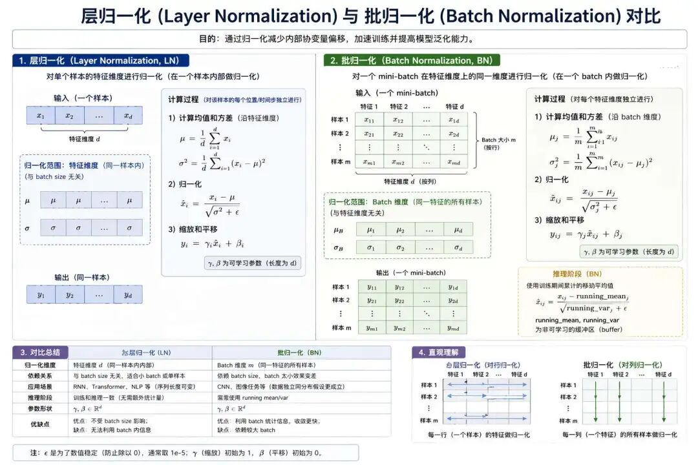
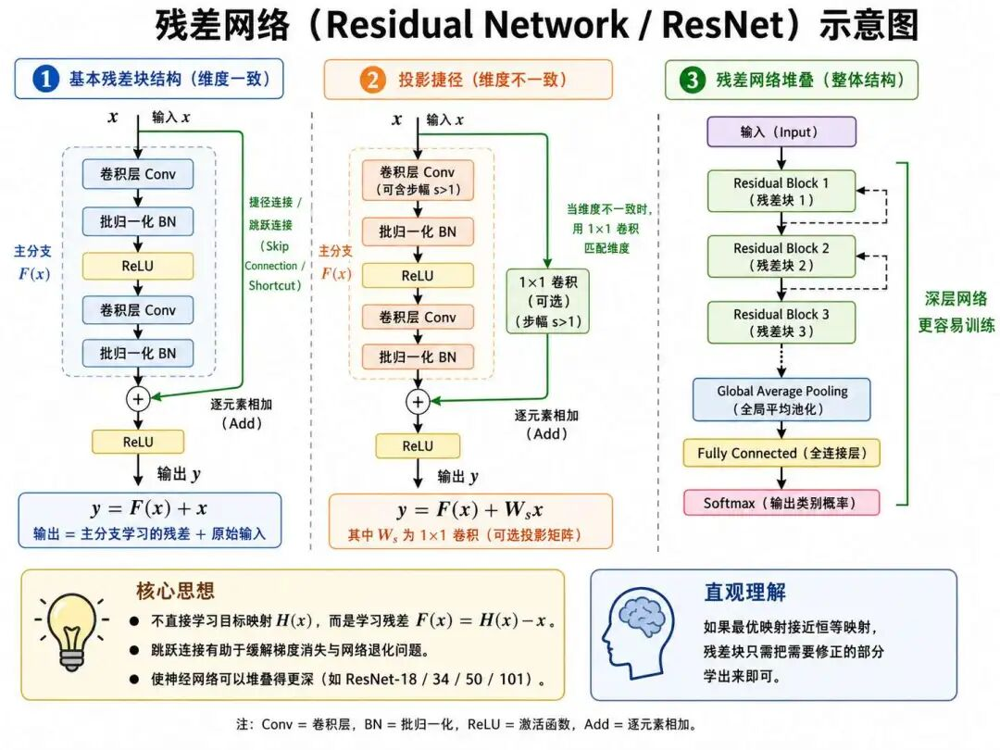
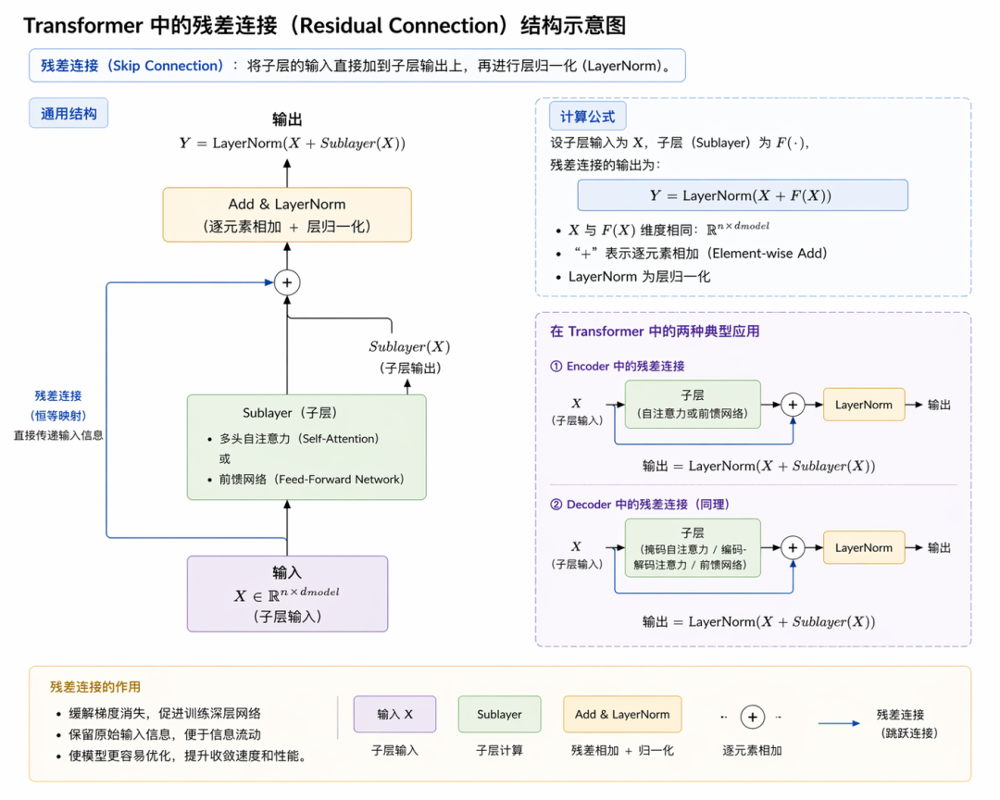
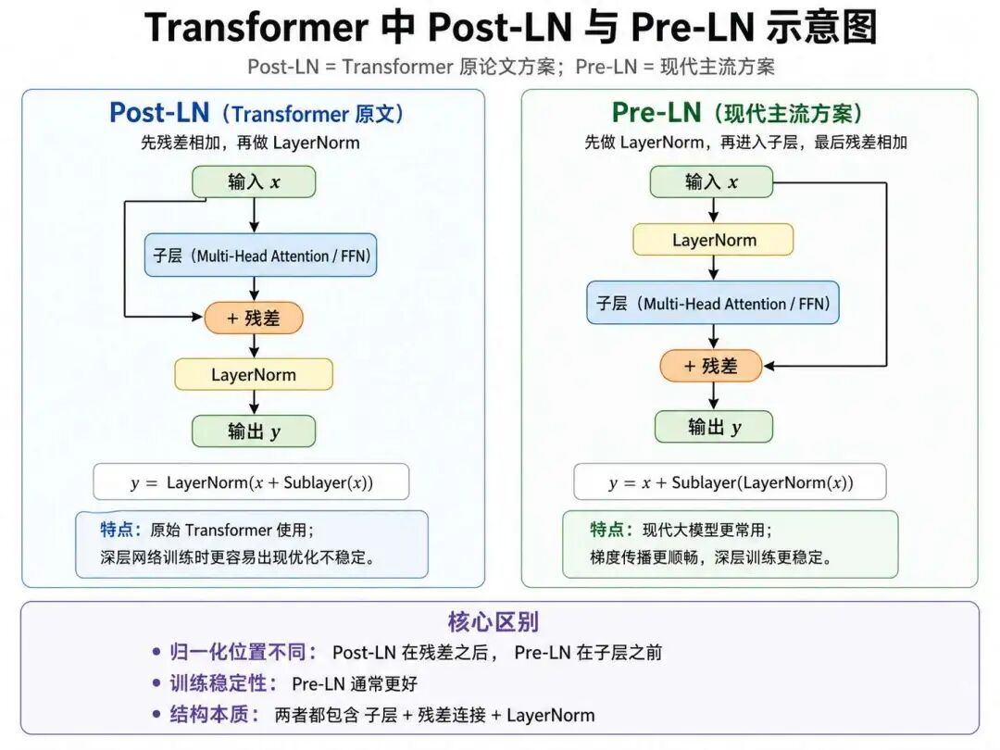

Transformer（四）
"成功创造出有效的人工智能可能是我们文明史上最大的事件，但除非我们学会如何准备和避免潜在的风险，否则人工智能可能是我们文明史上最糟糕的事件。"--斯蒂芬·霍金
前面几讲，我们将重点放在了多头自注意力机制，可以说自注意力机制是整个Transformer的核心，理解了多头自注意力机制，有助于把握目前大模型中信息交互的核心方式，但要全面理解大模型，还需要结合前馈网络、残差连接、归一化等部分一起看。

接下来我们进入到多头自注意力机制的后处理阶段，也就是残差连接和前馈神经网络，我们首先来看看残差连接，残差连接的基本形式是：
$$ 输出 = 输入 + 子层输出 $$这种简单设计解决了深层网络的核心难题：
（1）首先是可以缓解梯度消失，在反向传播时，梯度能通过残差路径"跳跃"回浅层，如同一条梯度高速公路，有效解决了深层网络梯度信号衰减的问题。
（2）其次是防止网络退化，它让网络只需学习当前输出相对于输入的"残差"（即变化量）。即使某个子层暂时没有学到特别有效的信息，残差连接也能为网络提供一条更容易保留输入信息的路径，从而缓解随着网络加深而带来的优化困难。
（3）最后是保留原始信息，它确保每一层的原始输入信息都能无损地传递到下一层，防止关键信息在复杂的注意力或前向传播计算中丢失。
在Transformer中，残差连接总是与层归一化（Layer Normalization） 协同工作，形成 Add & Norm 模块，共同稳定数据分布，加速训练收敛，因此在正式讲解残差连接首先要深入了解一下归一化技术。
归一化
归一，顾名思义，跟数值1有关，我们之前在机器学习的相关算法章节中多次学习过归一化或标准化可以消除量纲差异，和极端值的影响。
比如身高和体重是不同的维度，175cm和70kg没法比，但是如果全部映射到0～1这个区间就可以比较了。
它通过线性或非线性变换将数据映射到特定区间（如[0,1]）或调整到均值为0、方差为1附近的尺度上，从而让数据分布更稳定，有助于缓解训练过程中梯度消失和梯度爆炸等问题。
从数学的角度，只有两种归一化技术，一种是数据映射到［0,1］的范围内：
Min-Max归一化：$x_{\text{norm}} = \frac{x - x_{\min}}{x_{\max} - x_{\min}}$，将数据压缩至[0,1]。
另一种是标准正态分布的归一化技术：
Z-Score标准化： $x_{\text{std}} = \frac{x - \mu}{\sigma}$，服从标准正态分布。
在深度学习领域，归一化技术又主要分为批归一化技术和层归一化技术，而我们Transformer中使用的正是层归一化技术。

层归一化
层归一化又称为LayerNorm，简称LN， LN对单个样本的所有特征维度进行归一化，如序列（一句话）中每个token的512维向量，其中输入 x 是一个维度为 d 的向量（例如，$d_{\text{model}} = 512$ ），数学公式为：
$$ \text{输出} = \gamma \odot \frac{x - \mu}{\sqrt{\sigma^2 + \epsilon}} + \beta $$注释版：
$$ \underbrace{\text{输出}}_{\text{LayerNorm 输出}} = \underbrace{\gamma}_{\text{缩放参数}} \odot \frac{\underbrace{x}_{\text{输入}} - \underbrace{\mu}_{\text{均值}}} {\sqrt{\underbrace{\sigma^2}_{\text{方差}} + \underbrace{\epsilon}_{\text{小常数防除0}}}} + \underbrace{\beta}_{\text{偏移参数}} $$- $\mu$ 是向量 $x$ 的均值。
- $\sigma^2$ 是向量 $x$ 的方差。
- $\gamma$ 和 $\beta$ 是可学习的参数，分别用于缩放和平移标准化后的数据。
- $\epsilon$ 是一个很小的常数，用于防止分母为零。
- $\odot$ 表示逐元素乘法。
Transformer中使用层归一化是为了消除层与层之间数据分布差异，从而加速训练，并让深层网络的训练过程更加稳定。
通过约束每层输出的均值和方差，通常 $\mu≈0, \sigma≈1$，避免激活值过大导致梯度爆炸或过小导致梯度消失。在实践中，如果移除LayerNorm，Transformer的训练通常会变得更不稳定，尤其在层数增加后更明显。
在Transformer的训练初期，层归一化可使损失下降速度提升2-3倍。例如，在WMT14英德翻译任务中，使用层归一化的模型在10万步内达到BLEU 28.5，而未使用LN的模型需15万步。
批归一化
批归一化，顾名思义，是跟批有关系的，也就是一个batch中的所有序列（比如多个句子同时处理的场景），对于批次中的所有维度，每个维度内都进行各自的归一化操作。
但是批归一化更多的使用场景是计算机视觉，尤其是在卷积网络的特征图中。BN通常会对每个通道分别统计当前批次内所有样本的均值和方差，再对该通道上的激活值进行归一化。
$$ y_i = \gamma \cdot \frac{x_i - \mu_B}{\sqrt{\sigma_B^2 + \epsilon}} + \beta $$注释版：
$$ \underbrace{y_i}_{\text{BN 输出}} = \underbrace{\gamma}_{\text{缩放因子}} \cdot \frac{\underbrace{x_i}_{\text{输入}} - \underbrace{\mu_B}_{\text{批次均值}}} {\sqrt{\underbrace{\sigma_B^2}_{\text{批次方差}} + \underbrace{\epsilon}_{\text{平滑项}}}} + \underbrace{\beta}_{\text{偏移因子}} $$首先，对当前小批量（mini-batch）数据计算其均值和方差。
- 均值（μ₈）：衡量该批次数据的中心位置。
- $\mu_B = \frac{1}{m} \sum_{i=1}^m x_i$
- 方差（σ₈²）：衡量该批次数据的离散程度。
- $\sigma_B^2 = \frac{1}{m} \sum_{i=1}^m (x_i - \mu_B)^2$
其中，$m$ 是小批量中的样本数量，$x_i$ 是该批次中的第 i 个样本数据。
利用计算出的均值和方差，将原始数据标准化为均值为0、方差为1的分布。
$$ \hat{x}_i = \frac{x_i - \mu_B}{\sqrt{\sigma_B^2 + \epsilon}} $$注释版：
$$ \underbrace{\hat{x}_i}_{\text{标准化后结果}} = \frac{\underbrace{x_i}_{\text{原始输入}} - \underbrace{\mu_B}_{\text{批次均值}}} {\sqrt{\underbrace{\sigma_B^2}_{\text{批次方差}} + \underbrace{\epsilon}_{\text{小常数}}}} $$这里的 ε 是一个很小的常数（例如1e-5），是为了防止分母为零，确保数值稳定。
然后引入两个可学习的参数（Learnable Parameters）γ（缩放因子）和 β（平移因子），对标准化后的数据进行变换，以恢复网络的表达能力。
$$ y_i = \gamma \hat{x}_i + \beta $$注释版：
$$ \underbrace{y_i}_{\text{BatchNorm 最终输出}} = \underbrace{\gamma}_{\text{缩放参数}} \underbrace{\hat{x}_i}_{\text{标准化值}} + \underbrace{\beta}_{\text{偏移参数}} $$γ 和 β 允许网络自行学习，决定在多大程度上保留标准化后的特性或是恢复原始的分布，从而保证模型的复杂度。
批归一化的作用和层归一化的作用是类似的：
1）解决内部协变量偏移
"内部协变量偏移"，这个名词不好懂，要解释一下，"内部" 指的是网络内部的隐藏层，而不是整个网络的输入数据。"协变量" 大致可以理解为一层的输入数据。"偏移" 指的是输入数据的分布发生改变，比如数据的均值、方差等统计特性发生了变化。
在训练深度神经网络时，由于网络前几层的参数在不断更新，导致后面每一层的输入数据的分布，也会随着训练的进行而不断地、剧烈地发生变化。
每一层都在"疲于奔命"地适应一个总是变来变去的输入分布，而不是专注于学习核心特征。这导致网络需要更多的时间，和更多迭代次数才能收敛。
而批量归一化解决这个问题的核心思想是：在数据送入每一层的激活函数之前，先对它进行一步"标准化"处理，将其强制调整为均值为0、方差为1的稳定分布。这就像是给每一层的输入数据都制定了"统一的交通规则"。
2）抑制梯度消失/爆炸
深层网络中，激活值过大或过小易导致梯度异常。BN通过将数据调整到均值为0、方差为1附近的稳定尺度，使反向传播的梯度幅值更平稳。因此，在很多卷积神经网络中，批归一化都会显著改善训练稳定性并加快收敛。
实验表明，BN可使训练速度提升30%-50%，例如在ImageNet任务中，ResNet使用BN后收敛步数减少一半。
以下是对层归一化和批归一化的比较：
| 维度 | 批归一化 (BN) | 层归一化 (LN) |
|---|---|---|
| 归一化维度 | 同一批次内单个特征维度的所有样本数据 | 单个样本内所有特征维度的数据 |
| 批次依赖 | 依赖大批量数据（建议batch_size≥32） | 与批次大小无关，支持小批量或动态序列 |
| 统计量计算 | 使用当前批次数据的均值和方差 | 仅基于单个样本的均值和方差 |
| 梯度稳定性 | 在图像任务中稳定梯度，但对序列模型不适用 | 在序列模型中稳定梯度，支持长依赖关系 |
| 训练与推理差异 | 推理时需用训练阶段积累的全局统计量 | 训练与推理使用相同计算方式 |
| 信息保留特性 | 保留不同样本间同一特征的相对关系，破坏样本内特征关系 | 保留样本内特征的相对关系，破坏样本间关系 |
残差连接
残差连接的起源
随着神经网络不断加深，研究者逐渐发现：更深的网络并不一定更容易训练。传统理论认为更深的网络应具备更强的特征抽象能力，然而，2015年前后，研究者在实践中发现了一个反直觉现象：当神经网络层数继续增加后，模型的训练误差和测试误差不降反升，这一困境被称作网络退化问题（Degradation Problem）。
实验结果显示，56层网络的性能显著劣于20层网络，且这种退化并非源于过拟合，而是深层网络优化困难的综合体现。
梯度消失/爆炸虽可通过参数初始化与归一化技术部分缓解，但深层网络依然可能面临优化困难，导致"理论上更深、实际上更难训练"的问题。
就在神经网络发展停滞不前时，2015年ImageNet竞赛中，一个名为ResNet网络的模型以3.57%的Top-5错误率成功夺冠，这就是何恺明团队提出的残差网络（ResNet）成为突破性解决方案。
其核心创新在于残差学习范式：通过跳跃连接（Shortcut Connection）将输入信号直接传递至深层，使网络只需学习输入与输出的差异（残差函数），而非完整的非线性映射。
这种设计不仅为梯度反向传播提供了更直接的路径，也让深层网络更容易学习接近恒等映射的函数，从而显著改善了可训练性。
ResNet-152进一步验证了超深网络可以被成功训练，也深刻影响了后续神经网络的结构设计。
ResNet的影响目前已不仅仅局限于计算机视觉领域。在自然语言处理中，Transformer架构通过残差连接实现千层网络的稳定训练；在科学计算中，扩散残差网络（Diff-ResNet）将物理方程与残差机制融合，解决少样本学习的泛化难题。
作为深度学习史上的里程碑，ResNet不仅重构了网络设计范式，更启示研究者：通过结构创新实现优化目标与函数空间的协同，远比单纯增加参数规模更具效用。
残差连接的网络结构
Transformer中的残差网络结构通过跳跃连接（Shortcut Connection）与层归一化（LayerNorm）的协同设计，解决了深层模型训练中的梯度消失和网络退化问题。
其结构可分为编码器与解码器的模块化堆叠，具体设计如下：
$$ \text{Output} = \text{LayerNorm}(x + \text{Sublayer}(x)) $$注释版：
$$ \underbrace{\text{Output}}_{\text{Transformer 子层输出}} = \underbrace{\text{LayerNorm}}_{\text{层归一化}} \bigg( \underbrace{x}_{\text{原始输入}} + \underbrace{\text{Sublayer}(x)}_{\text{子层计算结果（注意力/前馈）}} \bigg) $$每个子层（自注意力或前馈网络）的输出与原始输入直接相加，形成残差路径，其中 $x$ 为输入向量，Sublayer($x$) 表示子层的计算结果（如多头注意力或前馈网络），这种跳跃连接直接传递输入，可以避免信息丢失，在残差相加后再执行层归一化，进一步可以稳定数值分布。
另外所有子层（包括嵌入层）的输出维度保持统一（如 $d_{model}=512$ ），且无需额外线性变换；
残差连接的设计特点
Transformer中残差连接与层归一化的标准顺序为先残差连接后归一化（Post-LN），即公式中的LayerNorm(x + Sublayer(x))。这种设计通过归一化稳定残差后的数值分布，避免梯度异常。
其次是要保证输入维度的一致性，为确保残差连接的可行性，所有子层及嵌入层的输出维度均保持为 $d_{model}=512$（原论文设定），避免因维度不匹配引入额外线性变换。
残差连接为反向传播提供了直流通路，允许梯度绕过复杂的非线性变换层直接传递到浅层，有效缓解梯度消失问题。实验表明，移除残差连接会导致深层Transformer（如6层以上）训练困难。
残差连接的梯度计算为：
$$ \frac{\partial}{\partial x}(x+Sublayer(x)) = 1+\frac{\partial}{\partial x}Sublayer(x) $$注释版：
$$ \underbrace{\frac{\partial}{\partial x}\big(x+\text{Sublayer}(x)\big)}_{\text{残差连接的梯度}} = \underbrace{1}_{\text{直连通道梯度}} + \underbrace{\frac{\partial}{\partial x}\text{Sublayer}(x)}_{\text{子层计算梯度}} $$从这个局部导数可以看出，残差分支中始终包含一个等于1的恒等项，这也是它有助于改善梯度传播的重要原因。

残差网络在transformer中的位置
Transformer论文原文中，残差连接位于每个子层的周围，即在多头自注意力子层和前馈神经网络子层的输入与输出之间：

每个编码器(encoder)和每个解码器(decoder)层都包含两个主要子层：
- 第一个子层：多头自注意力机制(multi-head self-attention)
- 第二个子层：前馈神经网络(position-wise feed-forward network)
残差连接被应用于这两个子层中的每一个，具体实现方式为：将子层的输入直接添加到该子层的输出上，然后进行层归一化(Layer Normalization)。
$$ LN(x) = LayerNorm(x + Sublayer(x)) $$具体在Transformer结构中，LayerNorm紧接残差连接之后应用，即遵循"子层处理 -> 残差相加 -> 层归一化"流程。例如：
# x
self_attention(x) + x
x = LayerNorm(x)
# x
x = FFN(x) + x
x = LayerNorm(x)为什么在残差连接和LayerNorm总是出现在一起？
残差连接的核心是一个简单的加法操作 输出 = 输入 + 子层(输入)。这个操作确保了信息可以跨层直接传输，为反向传播的梯度提供了一条"高速公路"（梯度项中包含恒为1的导数），有效缓解了梯度消失问题，使得训练极深的网络成为可能。
而层归一化则作用于这个相加后的结果，它在特征的维度上进行归一化，将其调整为均值为0、方差为1的稳定分布。这大大减少了所谓的"内部协变量偏移"问题，使得每一层网络的输入分布相对稳定，从而允许使用更大的学习率，并加速模型收敛。
也可以这样理解，残差连接修建了一条信息高速路，而层归一化则是这条路上的养护系统和交通信号灯。它确保路上跑的"车辆"（数据）保持规整的"车型和车速"（稳定分布），避免了交通混乱（训练不稳定），使得整个训练过程更加平滑和高效。
Pre-LN
上文提到的LayerNorm又称为Post-LN，其梯度回传的路径是：损失函数 -> LayerNorm -> 加法节点 -> 子层。
Post-LN这种回传路径的问题在于，梯度在到达加法节点后，必须先经过LayerNorm的反向传播才能继续流向浅层。LayerNorm会对梯度进行缩放，这意味着每经过一层，梯度信号就会被"加工"一次。
在非常深的网络中，这种缩放效应的连乘会极不稳定，极易导致梯度爆炸或消失，使得底层参数得不到有效的更新信号。残差连接设计的"梯度高速公路"初衷，可能会被这种结构部分削弱。
然而，在实践中，尤其是对于更深的模型，研究人员发现了一种变体更具优势：Pre-LayerNorm。它的顺序是：输入 + 子层(LayerNorm(输入))，即先对输入进行层归一化，再送入子层计算，最后与输入进行残差连接。
| 特性 | Post-LN (Transformer原文方案) | Pre-LN (现代主流方案) |
|---|---|---|
| 核心公式 | 输出 = LayerNorm(输入 + 子层(输入)) | 输出 = 输入 + 子层(LayerNorm(输入)) |

由于在进入计算复杂的子层（如自注意力）之前就先对输入进行了归一化，使得子层的输入分布更加稳定。这通常能带来更平滑的训练过程和更好的最终性能。因此，包括GPT系列、LLaMA在内的许多现代大模型都采用了Pre-LN结构。
总结来说，残差连接和层归一化虽然不像注意力机制那样直接参与"信息筛选"，却是Transformer能够稳定训练、持续加深的关键支撑结构：残差连接负责为信息传递和梯度回传保留一条更直接的通路，层归一化负责让每一层的数据分布保持相对稳定，二者协同作用，才让Transformer不只是"能设计出来"，更是"能真正训起来、跑起来、扩展起来"。
也正因为如此，Transformer的强大，从来都不是某一个模块单独决定的，而是注意力机制、残差结构与归一化机制共同配合的结果。
学习时刻
残差连接（Residual Connection）：指把子层的输入直接加到子层的输出上，形成一条跨层的信息捷径。它的核心价值，不是简单"做加法"，而是让原始信息和梯度都能沿着更短的路径传播，从而缓解深层网络训练中的梯度消失和网络退化问题。
层归一化（Layer Normalization, LN）：指对单个样本内部的所有特征维度进行归一化处理，使该样本在进入下一步计算前保持更稳定的数值分布。它的关键作用，不是单纯把数值"变小"，而是让每一层的输入输出更平稳，从而提升Transformer训练时的稳定性和收敛效率。
Add & Norm 模块：这是Transformer中残差连接与层归一化的组合结构，通常写作 LayerNorm(x + Sublayer(x))。它体现的思想是：先通过残差连接保留原始信息和直连路径，再通过归一化稳定相加后的数值分布，让每个子层既能学新特征，又不至于把训练过程搞乱。
Pre-LN 与 Post-LN：它们不是两种不同的归一化方法，而是LayerNorm放置位置的两种不同设计。Post-LN是"先残差、后归一化"，对应原始Transformer；Pre-LN是"先归一化、后子层计算再残差"，在现代大模型中更常见，因为它通常能让深层网络的梯度传播更稳定、训练更平滑。